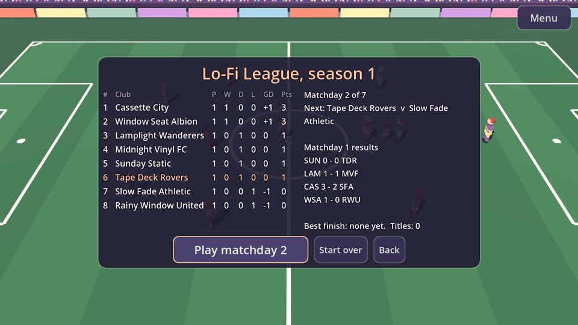
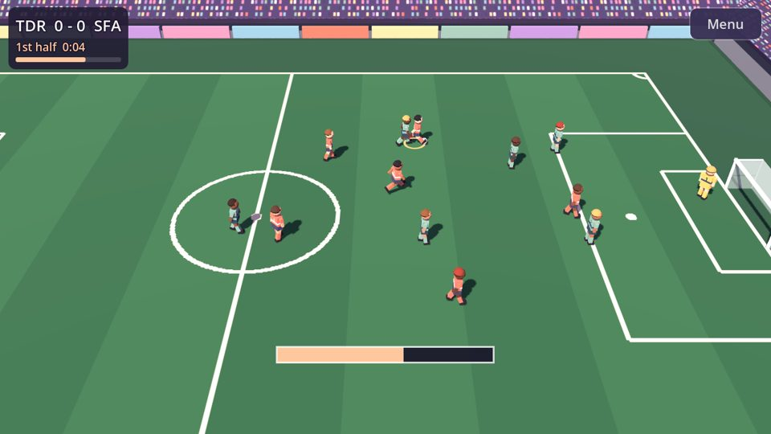

Lo-Fi League
Laid-back 7 a side soccer
Pass, shoot and take it easy. Pick one of eight fictional clubs, play a relaxed match or a whole league season against the computer under a sunset sky, with lo-fi beats in the background.
Version 0.2.2. Release notes · Backlog · Source on GitHub



What kind of game is this?
Pick up and play. Move, pass, shoot and tackle. Two 3-minute halves make a match of about 6 minutes.
Laid-back mood. Lo-fi music, soft colors and friendly tackles. No injuries and no red cards.
Rules you know. Kickoffs, throw-ins, corners, goal kicks and goals. Computer keepers on both sides.
A season to play. Seven matchdays, a table and a champion. Your season saves after every match.
Things to do
- Play a league season with any of eight clubs: Tape Deck Rovers, Midnight Vinyl FC, Rainy Window United, Sunday Static, Cassette City, Slow Fade Athletic, Lamplight Wanderers and Window Seat Albion.
- Climb the table, win the title and beat your best finish.
- Play a one-off exhibition match against the computer.
- Thread passes and take over the player who receives them.
- Hold the shot button for power and aim for a corner.
- Practice your finishing against just a keeper, with no clock.
- Build your win, draw and loss record. It saves on your device.
Controls
Keyboard
WASD or arrows move. Space passes or switches player. F shoots or tackles (hold for power). Shift sprints. Esc opens Menu.
WASD or arrows move. Space passes or switches player. F shoots or tackles (hold for power). Shift sprints. Esc opens Menu.
Xbox controller
Left stick or D-pad moves. A passes or switches. X or B shoots or tackles (hold for power). RT or RB sprints. LB switches player. View or Menu opens the Menu. In menus A chooses and B goes back.
Left stick or D-pad moves. A passes or switches. X or B shoots or tackles (hold for power). RT or RB sprints. LB switches player. View or Menu opens the Menu. In menus A chooses and B goes back.
Touch
Drag on the left half to move. Pass, Shoot and Sprint buttons on the right. Menu at the top right.
Drag on the left half to move. Pass, Shoot and Sprint buttons on the right. Menu at the top right.
Play with an Xbox controller
Any Xbox Wireless Controller with Bluetooth works. That is every Series X|S controller and the Xbox One controllers made since 2016. If the plastic around the Xbox button matches the face of the controller, it has Bluetooth. Other controllers that your phone or browser sees as a standard gamepad use the same buttons.
On Android
- Hold the Xbox button to turn the controller on.
- Hold the small Pair button on top for 3 seconds, until the Xbox button flashes fast.
- On your phone, open Settings, then Connected devices, then Pair new device.
- Tap Xbox Wireless Controller. The Xbox button stays lit when it is connected.
- Open Lo-Fi League. The touch buttons hide as soon as you use the controller.
In your browser
- Connect the controller to your computer with a USB cable or Bluetooth.
- Open Play in your browser. Chrome, Edge, Firefox and Safari all work.
- Press any button once after the game loads, so the browser sees the controller.
Menus
The D-pad or left stick moves between buttons. A chooses and B goes back. You can play the whole game with only the controller.
The D-pad or left stick moves between buttons. A chooses and B goes back. You can play the whole game with only the controller.
Install on Android
- Tap Download for Android on this page.
- Open the file. Allow installs from your browser if your phone asks.
- Tap Install, then Open.
- Version 0.2.2 installs over 0.1.1, 0.2.0 and 0.2.1. Your season and records stay. If you installed version 0.1.0, uninstall it first. It used a test signature.
Feedback
Tell Brian what you think. Useful things to note:
- How the passing, shooting and tackling feel.
- Whether the computer is too easy or too hard.
- Anything that looks wrong, with a screenshot.
- Your phone or browser.